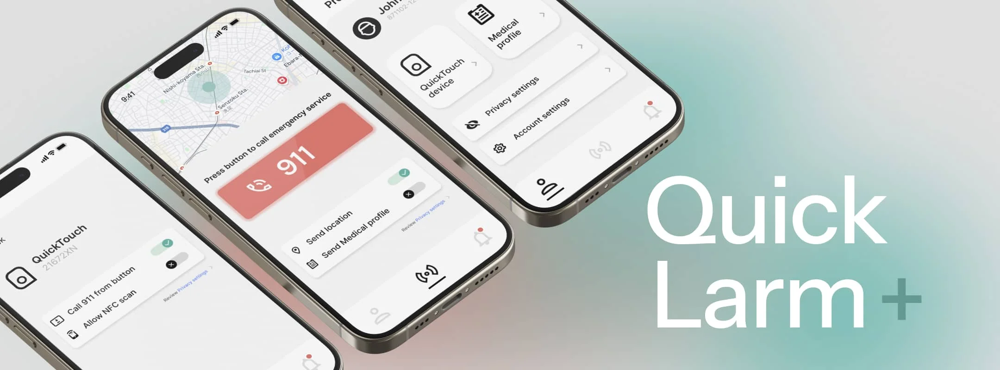

QuickLarm
Exploring possible experiences and services to create an interactive digital prototype of a design concept within the following problem area:
Digital tools for saving seconds in rescue operations.
- Tools
- Figma, Illustrator, Adobe XD
- Field
- UX/UI Design, Prototype Development, Product Development
- Stakeholder
- University of Kristianstad

Background
In emergency situations every second counts. When someone loses consciousness due to a medical condition like diabetes or heart problem, it's critical that first responders have immediate access to relevant medical information. However, unconscious individuals can't communicate their health needs, and important details like allergies, medications, or pre-existing conditions may not be immediately available. Although medical alert bracelets or ID cards exist, they aren't always worn or they might be hard to find in a chaotic emergency. There's a clear need for a more reliable and accessible way to quickly share this vital information during a crisis.
Problem
When someone collapses in public due to a health emergency, bystanders and emergency responders often have no way of knowing what medical issues the person might be facing. Without identification responders can be left scrambling for critical information, which could lead to delays in treatment or even harmful mistakes. This lack of information, coupled with the urgency of the situation, can put lives at risk.
Opportunity
This project offers the chance to develop a practical, digital solution that ensures emergency responders have immediate access to a person's medical information when they need it most. The idea is to create an app that connects to a small, easy-to-carry device that can instantly send a user's health profile to emergency services at the push of a button. By integrating this kind of system, we could drastically reduce response time, prevent errors and ultimately save lives in emergencies.
The primary target audience for this digital solution is individuals with existing medical conditions.
Market research
To better understand the role of digital solutions in improving emergency response, I explored recent innovations aimed at reducing response times in critical situations. One notable study by researchers at the Hjärtstoppscentrum at the Karolinska Institute, tested the use of drones to deliver defibrillators to remote locations where traditional ambulance services may face delays.
"For each minute without treatment, the chance of survival decreases by up to 10%."
The study found that drones were able to reach the scene faster than ambulances in many cases, potentially saving crucial minutes. This research highlights the growing role of technology in emergency services, which is a key inspiration for my project: using digital tools to quickly share critical medical information and improve response times when every second counts.
User research & concept ideation
After a brainstorming session for design solutions, I gathered three stakeholders in a design workshop where we evaluated different needs, functions and user scenarios, and they told me what they find most important. This gave me valuable insight into different opinions of mobile apps, data privacy concerns, ethical medical practice.
It was important that these three stakeholders had a diverse background to ensure the design addressed a broad range of cultural, generational, and social perspectives, helping to uncover potential biases and ensuring the solution would be inclusive and accessible to a wide audience.
They all had different concerns. The Swedish woman was more concerned about data privacy, and gave valuable information in relation to parenting and ability to connect the app with your children, the Italian woman had opinions about medical bias, where the Japanese man was more concerned about functionality.
P1, woman
Swedish
Age 50+
"Data privacy"
"Connectivity with family members"
P2, woman
Italian
Age 30+
"Medical bias"
P3, man
Japanese
Age 25+
"Functionality"
Mock-up & prototyping
With the stakeholder feedback I developed a prototype based on the idea of saving your information in a profile in an app that can (with the users expressed consent) be sent to the emergency operator through an external digital device.
Certified Nursing Assistant in emergency ambulance care
In building this paper prototype I consulted with a Certified Nursing Assistant in Sweden who has completed a 40-week course in Emergency Ambulance care. She's been actively working with emergency ambulance care for 20 years. She explains how their system works and the problem areas she sees within ambulance care system. One of the areas for improvement she identifies is that SOS (emergency dispatch) does not always have enough information. The information should be concise, but sometimes relevant details are missing that could affect the outcome. One example she mentioned was that they could receive an alert about a person who is suddenly confused, but the fact that the person is diabetic might be missing from the report. Confusion is common with low blood sugar, and this information would be crucial for responders to know.
User scenario test
To explore the functionality of the prototype in a real-world context, I recruited two stakeholders to conduct a role-playing session using a paper prototype. The participants acted out a user scenario where one portrayed an unconscious person, and the other played a bystander needing to alert emergency services.
I provided an overview of the scenario but allowed the stakeholders to guide the interaction themselves, ensuring the experience felt as natural and authentic as possible. This approach helped assess the design's usability in a dynamic, real-world setting. Using props and mockups, we tested various elements, including the design concept, graphic layout and overall user-friendliness.
Scenario 1
In the first scenario, the bystander had to find the unconscious person and alert emergency services via a "tap" function between their phones. In a variation of Scenario 1, the person had fainted with their phone in their pocket, and the bystander felt uneasy about searching through the pockets of an unconscious person, describing it as an invasion of privacy. It also took a long time to find the phone when it was inside his bag.
Scenario 2
In Scenario 2, the unconscious person had fainted while wearing the prototype of the alert device around their neck. The bystander could call for emergency assistance, and verify the profile thanks to the external device. This method of alerting was quicker and more straightforward but (most importantly) it was less invasive.
The dramatization of the use context provided a better understanding of the actual movements and actions in an emergency situation, helping us identify aspects of the design to remove or add. We identified a need for an external digital device to be able to alert in a secure and dignified manner without having to go through the pockets and belongings of an unconscious person.
Design solution
The users create their profile in the QuickLarm app where they can optionally disclose medical information. In an emergency, the app can be used to directly contact emergency responders, sending essential information—such as the user's identity, medical profile, and location—immediately upon the call. This streamlined data exchange helps accelerate response times and improve the efficiency of rescue operations.
Privacy and control are central to the app's design, reflecting insights gathered from early stakeholder interviews. Users have the flexibility to decide when and what medical details—such as allergies, medications, or pre-existing conditions—are shared with emergency services during an emergency. They can also choose whether to share their location, ensuring they remain in control of their sensitive data at all times.
While the app can be used on its own, there is an option to pair with an additional device called QuickTouch. This compact device can be worn around the neck or attached to a bag strap for easy access. QuickTouch syncs with the user's QuickLarm profile, and with a simple button press, it sends an emergency alert to responders. In addition, medical personnel can scan the device via NFC to instantly retrieve the user's medical profile, providing them with critical information in situations where the individual may be unable to communicate. This feature is especially valuable in time-sensitive medical emergencies, where every second counts.
Mid fidelity prototype
A mid-fidelity prototype was created based on the feedback by the user scenario testing. The prototype includes a register account flow, user profile, emergency alert function, account history and QuickTouch device settings.
High fidelity prototype
During a supervised testing session, I gathered valuable feedback from a stakeholder regarding the prototype's usability. One key issue identified was that the information flow did not feel intuitive, which could be a significant barrier in emergency situations. Users in such scenarios need to make quick, decisive actions without having to navigate complex interfaces. To address this concern I implemented various design changes. For example, the emergency call button was changed to a prominent red color to enhance visibility and signal urgency and action. This change improves the overall intuitiveness of the interface, ensuring users can act quickly in high-pressure situations.
QuickTouch device
By combining the app with the QuickTouch device, the QuickLarm system offers a dual layer of safety, ensuring that users' medical information is readily available to emergency responders, even when they are unable to advocate for themselves.
Reflection
This project explores the development of a mobile prototype for emergency medical situations, aimed at improving the speed and accuracy of medical alerts. The prototype focuses on providing quick access to critical medical information for unconscious individuals, helping emergency responders act faster.
Further user studies are necessary to refine the design. This will involve larger sample sizes and diverse user demographics to gather more representative data on how the device performs in various real-world situations. Testing should also focus on assessing the intuitive nature of the interface, ensuring that both the emergency alert system and the mobile app are easy to use under stressful conditions.
Furthermore, ongoing collaboration with healthcare professionals and emergency responders is essential to verify the prototype's practical application and ensure it aligns with medical protocols. Professional input will help to make the design as user-friendly and effective as possible. Finally, ethical considerations regarding privacy and the safe handling of personal medical data must be addressed.